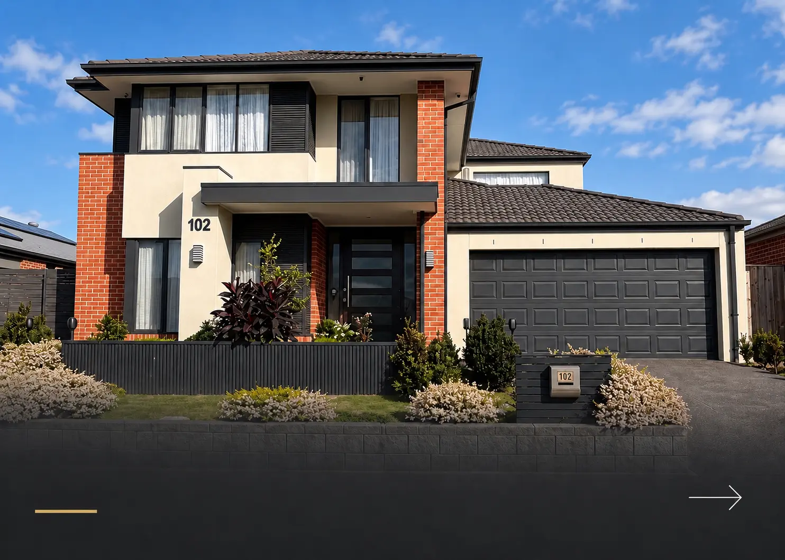

Residential painting
Residential
painting
A fresh finish.
A home that feels like you.
The right colours and a beautifully applied finish can change the way your home feels—from a brighter living room to an exterior that welcomes you home.
At Crocco Painting & Venetian, we provide interior and exterior residential painting across South East Melbourne, combining careful preparation, quality materials and personal service.
Our residential painting services
- Interior walls and ceilings
- Doors, frames, skirting boards and trims
- Exterior walls, façades and rendered surfaces
- Eaves, fascia boards and other exterior details
- Fences and gates
- Full-home repaints and individual room updates
- Colour guidance and finish selection
Your home, treated with care.
Inviting tradespeople into your home requires trust. We protect your furniture and surrounding surfaces, keep work areas tidy and communicate with you throughout the project.
From preparation to the finishing touches, our focus is on delivering a result you’ll enjoy living with.
Let’s refresh your home.
Share your ideas with us, and we’ll help you choose the right approach for your space.
Get a free quote →